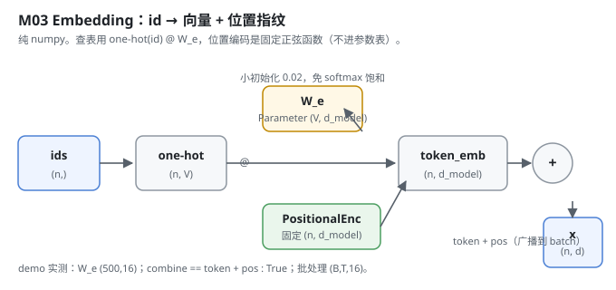
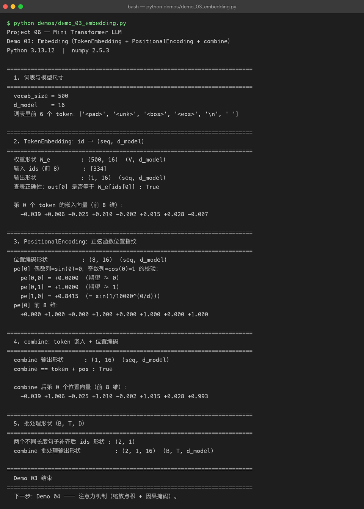

Milestone 03 — Embedding：把 id 变成「带位置的向量」
Milestone 02 把文本变成了 id 序列，vocab_size = 500。但 id 对模型来说还是一堆整数 —— 模型不会算 334 > 12，它只懂向量。Embedding 这一层就是把每个 id 映射到一行 d_model 维的向量，再叠上一个让模型知道「这是第几个位置」的位置编码。
在 Project 05 里，模型内部对我完全黑盒；到了这里，我第一次亲手把 id → 向量 这步写出来 —— 而且关键不是「查表」本身，而是查表也要能回传梯度，否则后面训练时 Embedding 这层永远学不动。
1. What / Why：id 为什么不能直接进 Transformer
Transformer 里一切都是矩阵乘法。整数 id 没法参与 QKᵀ，它必须变成连续向量。两个必须回答的问题：
- 怎么从 id 拿到向量？ —— 一张
(V, d_model)的查找表W_e，按 id 取行。 - 怎么让它知道位置？ —— 自注意力本身对顺序无感（把输入打乱，注意力权重只跟着打乱，模型分不清「猫吃鱼」和「鱼吃猫」）。所以要给每个位置加一个唯一指纹。
本项目的项目规则是纯 numpy，不用 torch。所以这张查找表不是 nn.Embedding，而是手写 one-hot(id) @ W_e。
2. Design：one-hot 查表 + 固定正弦位置编码
src/model/embedding.py 里三样东西：
TokenEmbedding：W_e是Parameter(np.random.randn(V, d_model) * 0.02)，小初始化避免一上来 softmax 就饱和。前向用one_hot(ids) @ W_e，而不是W_e[id]花式索引 —— 因为 one-hot 是常量、W_e是参数，反向时梯度自动「scatter 回那一行」，正是 Embedding 该有的行为，还不用手写 gather/scatter。PositionalEncoding：pe[pos, 2i] = sin(pos/10000^(2i/d))，pe[pos, 2i+1] = cos(...)。这是常量 Tensor，不进parameters()—— 它只是位置指纹，不该被训练改掉。整张表预计算好，用时切片。combine：x = TokenEmb(ids) + PosEnc(len(ids))。位置编码是(seq, d_model)、token 嵌入是(B, seq, d_model)，add会自然把位置编码广播到整个 batch。

形状约定（和 Milestone 01 契约一致）：(V, d_model) 的 W_e，输出 (n, d_model)，批处理 (B, T, d_model)。
3. Real-run evidence（来自 demos/out/demo_03_embedding.txt）
真实环境：Python 3.13.12 | numpy 2.5.3。
vocab_size = 500
d_model = 16
词表里前 6 个 token：['<pad>', '<unk>', '<bos>', '<eos>', '\n', ' ']
权重形状 W_e : (500, 16) (V, d_model)
输入 ids（前 8） : [334]
输出形状 : (1, 16) (seq, d_model)
查表正确性：out[0] 是否等于 W_e[ids[0]] : True
第 0 个 token 的嵌入向量（前 8 维）：
-0.039 +0.006 -0.025 +0.010 -0.002 +0.015 +0.028 -0.007位置编码的「第 0 位恒为 0、第 1 位恒为 1」被正确验证：
位置编码形状 : (8, 16) (seq, d_model)
pe[0,0] = +0.0000 (期望 ≈ 0)
pe[0,1] = +1.0000 (期望 ≈ 1)
pe[1,0] = +0.8415 (= sin(1/10000^(0/d)))
pe[0] 前 8 维：
+0.000 +1.000 +0.000 +1.000 +0.000 +1.000 +0.000 +1.000combine 确实是逐位相加（token + pos），并且批处理形状自洽：
combine 输出形状 : (1, 16) (seq, d_model)
combine == token + pos : True
combine 后第 0 个位置向量（前 8 维）：
-0.039 +1.006 -0.025 +1.010 -0.002 +1.015 +0.028 +0.993
两个不同长度句子补齐后 ids 形状 : (2, 1)
combine 批处理输出形状 : (2, 1, 16) (B, T, d_model)可以核对：-0.039 + 0.000 = -0.039、+0.006 + 1.000 = +1.006、+0.028 + 0.000 = +0.028、-0.007 + 1.000 = +0.993，和打印的 combine 值逐位吻合 —— 加法没算错，广播也没错位。

4. Bugs / lessons
这一版 demo 没有暴露真实 bug（查表、位置编码、combine 三项断言全绿，且数值可手算核对）。一个设计层面的注意点值得记下来：位置编码用 requires_grad=False 的常量 Tensor，否则它会被 model.parameters() 捞进优化器、被 Adam 改掉 —— 那模型就失去了「这是第几个位置」的锚点。代码里 PositionalEncoding.forward 显式传了 requires_grad=False，这条没漏。
5. Conclusion
- id 必须变成向量才能进 Transformer；查表用
one-hot @ W_e而不是W[id]，是为了让梯度能 scatter 回W_e那一行。 - 位置编码是固定常量，不进参数表 —— 它只负责告诉模型「第几个位置」，不该被训练。
combine = token + pos用广播自然贴合 batch，无需手动循环。- 小初始化（0.02）不是随便选的：避免 Embedding 一上来就进 softmax 饱和区，下游梯度才流得动。
6. Code map
| 文件 | 职责 |
|---|---|
src/model/embedding.py | TokenEmbedding（查找表 + 梯度友好的查表）、PositionalEncoding（固定正弦）、combine（相加广播） |
src/model/embedding.py::_one_hot | id → one-hot（保留 batch 维） |
demos/demo_03_embedding.py | 6 节演示：词表尺寸 / 查表 / 位置编码 / combine / 批处理，输出落 demos/out/demo_03_embedding.txt |
assets/embedding.svg | 本章数据流图 |
7. Version line
v0.1 → v0.2，Embedding 层落地（TokenEmbedding + PositionalEncoding + combine），纯 numpy，演示真实跑通并核对数值，配图 1 张手写 SVG + 1 张真实终端截图。